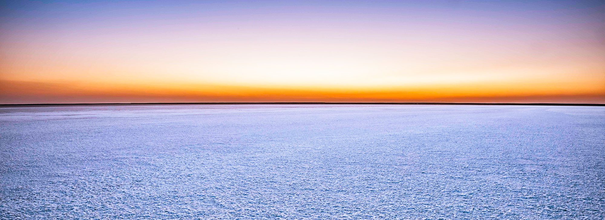
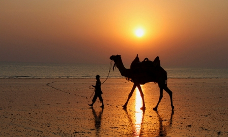

DWARKA

Dwarka is an ancient city in the northwestern Indian state of Gujarat. It’s known as a Hindu pilgrimage site. The ancient Dwarkadhish Temple has an elaborately tiered main shrine, a carved entrance and a black-marble idol of Lord Krishna. Dwarka Beach and nearby Dwarka Lighthouse offer views of the Arabian Sea. Southeast, Gaga Wildlife Sanctuary protects migratory birds and endangered species like the Indian wolf.
GANDHINAGAR

Gandhinagar is a planned city in the western Indian state of Gujarat. The Akshardham is a massive Hindu temple with ornate carvings and sculpted pillars, plus a water show in its sprawling gardens. Dandi Kutir museum traces the life of leader Mahatma Gandhi, who was born in Gujarat. South, along the Sabarmati River, the Indroda Nature Park has a zoo and botanical gardens, plus an adjacent dinosaur and fossil park.
GIR WILDLIFE SANCTUARY

The Gir National Park and Wildlife Sanctuary are one of the most significant national parks in India that provides shelter to the Asiatic Lions. Apart from the lions, it also possesses innumerable species of various plants and animals.The Gir Forests Reserve, created in 1913 to protect the largest of the surviving groups of Asiatic lions, was accorded sanctuary status in 1965. Several hundred Asiatic lions have been bred in the sanctuary since it was established.
GREAT RANN OF KUTCH
The Gir Forests Reserve, created in 1913 to protect the largest of the surviving groups of Asiatic lions, was accorded sanctuary status in 1965. Several hundred Asiatic lions have been bred in the sanctuary since it was established.The Rann of Kutch is the only large flooded grasslands zone in the Indomalayan realm. The area has desert on one side and the sea on the other enables various ecosystems, including mangroves and desert vegetation. Its grassland and deserts are home to forms of wildlife that have adapted to its often harsh conditions.
MANDVI
Mandvi is a Beach town with municipality in the Kutch district in the Indian state of Gujarat. It was once a major port of the region and summer retreat for Maharao of the Cutch State. The old city was enclosed in the fort wall and remains of the fort wall can still be seen.Mandvi Beach – Soothing Experience. Situated in the Kutch region of Gujarat, Mandvi Beach is soothing and calm seashore which is the most loved among the places to visit in Mandvi. It is provided with a peaceful and clean atmosphere and makes for a quiet getaway from the city.
SOMNATH TEMPLE

One of the 12 jyotirlinga shrines of Shiva, Somnath Temple is also the specimen of fine architecture. Dubbed as Eternal Shrine, it is believed to be the place where Lord Krishna ended his Lila and thereafter for heavenly abode.A one-hour sound-and-light show in Amitabh Bachchan's baritone highlights the temple nightly at 7.45pm. Brief History: It's said that Somraj (the moon god) first built a temple in Somnath, made of gold; this was rebuilt by Ravana in silver, by Krishna in wood and by Bhimdev in stone.